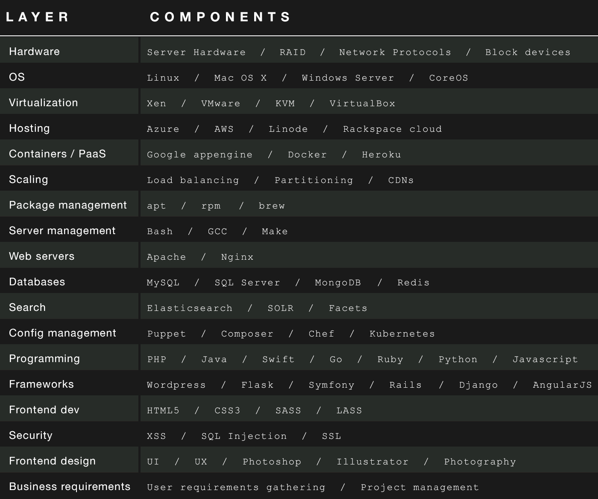

写在最前
我的前一篇文章《给职场新人的10点职涯建议》发表后，得到了很多简友，特别是年轻程序员朋友们的喜爱，这令我颇感意外，但又很受鼓舞。同时，我也收到了一些简信，大多来自那些毕业不久，刚步入工作岗位的职场新人。询问的内容也大多是如何选择职业方向，如何成为一名优秀的软件工程师，以及怎样快速提高自身的技能等。我在一一回复的同时，不禁想结合自身的经历，谈谈如何才能成为一名优秀的全栈工程师。
什么是全栈工程师
全栈工程师一词，最早出现于Facebook工程师Calos Bueno的一篇文章 - Full Stack （需翻墙）。他把全栈工程师定义为对性能影响有着深入理解的技术通才。自那以后全栈这个词便流行起来，我看到过的就有全栈工程师，全栈设计师，全栈运维，全栈市场营销人员等等。而在“拉钩”，“100Offer”等针对互联网人才的招聘网站上，全栈工程师更是一跃成为热门招聘职位，其薪资水平也比一般的开发工程师职位要高出一截。那么，什么是全栈工程师，我们又应该如何定义一名全栈工程师呢？
百度百科对全栈工程师的定义是这样的：“掌握多种技能，并能利用多种技能独立完成产品的人”。我觉得这个定义还不够全面，我认为全栈工程师应该同时是一位资深开发工程师、架构师以及具有敏捷开发技能的程序员。全栈工程师对于软件开发的认识往往已经进化了，他们把特定的技术抛到了身后，明白技术的更新始终比计算机理论要快的道理，因此，他们注重强化自身的核心技能，关注并乐于实践其他技术。全栈工程师往往是某一方面的专家，同时通晓并善于在正确的场合运用其他语言、工具和技术。
全栈工程师的价值
随着时间的推移，全栈工程师的作用和价值在越来越多的产品或项目中得到了印证。那么，我们来看看全栈工程师对于个人或公司意味着什么。
个人价值及自由度的极大提升 —— 我曾看过一些介绍全栈工程师的文章，文中大多强调了全栈工程师对于公司与团队的价值。而我想说的是，没有一个优秀的全栈工程师是因为会对公司产生多大的利益，而努力学习各种技术的。我所认识的他们，都是那些有着一颗匠心，不断追求更高技能，并执着于做出更优秀产品的人。而当你成为一名真正的全栈工程师后，会感受到前所未有的个人价值与技术自由度的提升。试想当一个很好的创意出现时，你可以一个人或主导一个团队去实现并不断完善它，这是一件多么让人兴奋的事啊！
全局思维与技术前瞻性 —— 由于具备了各个开发环节与技术领域的知识，全栈工程师往往具有更好的大局观和技术前瞻性，能够在项目初期就选择正确的技术，并很好地把控一个项目的整体方向。现代项目往往非常复杂，而全栈工程师往往能带来技术和质量上的保障，从而成为一个项目成功的关键人物。
降低沟通成本 —— 我经常听到有设计师抱怨前端工程师无法百分之百地还原他们的设计，而前端工程师又在抱怨后端工程师从接口返回的数据更本无法直接使用，后端工程师也在抱怨产品经理所提的需求根本无法完成。随着团队人数的上升，由于各自技能栈的不同，沟通成本一定会随之上升。全栈工程师除了能够独立完成前后端的开发（甚至包括设计）外，如果能够在项目初期提前介入，便能很好地规避技术风险，过滤不合理的需求，从而显著降低因不同技术差异导致的沟通问题，显著降低项目风险。
初创公司 —— 我们已经来到了一个万众创业，全民创新的时代。那些初创公司也如雨后春笋般不断涌现。初创公司往往都有了一个不错的创意，但经常会遇到“就缺一个程序员”的尴尬。我想说的是，他们其实并不是缺程序员，而是缺一位全栈工程师。初创公司往往资金有限，而一名优秀的全栈工程师能够帮助初创公司用最低的代价与最短的时间推出自己的产品。这是初创公司能够存活下来，拿到更多投资，甚至成为“独角兽”一员的最关键一步。
全栈工程师的技能栈
看到这里你一定会问，到底需要具备怎样的技能才能成为一名全栈工程呢？下面这张图来自Medium，作者将软件开发所涉及的各个方面分为层，又将每个层所包含的主要技术作为组件，制作了这张全栈技术图。

从上面这张图，我们不难发现，现在的技术体系是多么庞大，每一年又会有新的技术加入到这些层中，而已有的技术又在不断地更新。因此要掌握所有技术是根本不可能的，而成为全栈工程师也并不需要你真的掌握所有的技术，你应该将自己的精力聚焦于关键开发技能以及一些必须掌握的附加技能上。
关键开发技能（硬实力）：
Git / GitHub —— 你必须掌握如何使用Git来管理和分享你的代码。把Git作为关键技能的第一条，是因为它不仅仅是一个代码管理工具，更是一种推荐的工作方式。它使你能在任何地方进行开发，高效地管理任何大小的项目，通过Git你还能与其他团队成员进行分布式协作，大大提升工作效率。通过GitHub，还能将你与世界所有的开发者联系在一起。
至少一门编程语言 —— 你需要精通至少一门编程语言，JAVA 、PHP、C#、Python、Ruby、Perl 等，因为你的大多数核心业务处理都需要用这门语言来写。你既要掌握这门语言的语法，又需要非常熟悉如何基于这门语言进行项目的架构、设计、实现以及测试。如果你选择的是JAVA，那么你就需要掌握面向对象的设计和开发，设计模式的应用，基于J2EE各个组件的开发 等等。
运用开发框架和第三方库 —— 流行的开发语言，一般都伴有出色的开发框架，比如JAVA的Spring、MyBatis、Hibernate，Python的Django，PHP的 thinkphp、yin，nodeJs的 express 等等。这些开发框架往往都遵循软件开发领域的一些最佳实践，并由非常优秀的开发人员创建。熟练使用这些开发框架或第三方库能够避免重复发明轮子，使你的工作事半功倍。更重要的是这些优秀框架或第三方库的一般都得到持续的维护，是对你的产品或项目在质量与安全方便的最有效的保障。
前端技术 —— 之所以将前端技术独立出来，作为一项关键技术，是因为它在今天的项目和产品的研发过程中正变得越来越重要。一个产品除了实现所需的功能之外，是否好用（用户体验）也正在成为评判一个产品是否成功的重要标准。而这都依赖于前端技术的实现，你至少需要掌握 HTML5、CSS3、JavaScript 等基本前端技术，同时进一步学习 JQuery\、LESS、SASS、AngularJS或REACT等前端框架或第三方库。
数据库与缓存 —— 任何产品或项目都需要一个数据库来存储数据。作为全栈工程师，你也需要至少掌握一到两个数据库，并知道怎样与数据库进行交互。目前流行的数据库主要有MySQL、MongoDB、Redis、Oracle、SQLServer等。MongoDB作为文档型数据库，在互联网产品中正被越来越多地使用，对于规模稍大一些的项目，我仍推荐使用MySQL或商用的Oracle作为后端数据库。而Redis这样的内存数据库则可以用于缓存，以提升系统的性能。
基本设计能力 —— 大部分关于全栈工程师的文章或讨论中，都不会将设计能力做为全栈工程师的关键技能，但我却认为这项技能非常重要。我曾被邀请评估一些软件工程师自己开发的产品，这些产品都有不错的创意，功能实现也很到位，但一看就不是一个好的产品，用户根本没有使用欲望，原因是这些产品的设计太差了，而往往那些开发者完全么有意识到问题的存在，比如色彩的不一致，排版的凌乱，不恰当的图标 等等。我所建议的基本设计能力，并不要求你像专业设计师那样能够P出神图、制作奇妙的视觉效果等，但你需要掌握最基本的UI设计原则，如 色彩的搭配，基本的排版，并具备良好的审美能力，和一些基本UI设计能力，这样你做的产品就不会太差了。
在掌握了这些核心技能之后，你可以根据自己的兴趣与发展方向，学习其他方面的技术。比如，如果你对数据处理感兴趣，那么你可以学习大数据方面的技术。如果你对移动互联网更感兴趣，那么你可以学习Swit，开发ios应用。知识总是相通的，在有了良好的技术基础后，学习其他知识将会变得非常容易。
附加技能（软实力）：
沟通 —— 除非你是在做个人项目，对于稍大一些的项目，你总是需要与同事、干系人或是客户进行沟通的。而成功的沟通往往是获得有效需求，与建立团队信心的第一步。在项目的进行过程中，你更需要通过有效的沟通去确定方案，消除误解，与项目成员协同前进。良好的沟通能力将使你在团队中更具影响力，收到更多尊重和关注。
问题解决能力 —— 全栈工程师首先是一名工程师，他必须掌握工程化的方法来解决遇到的各种问题。我在职业生涯中的几乎所有亮点，都与解决问题相关，大到提供整个项目的架构方案，小到以最快的速度解决生产问题 等。其实有很多提高问题解决能力的方法，但没有一种比实践更有效。我所见到的优秀工程师，往往能够凭借直觉以最短的时间给出正确的解决方案，但你可能没有看到的是，在这背后其实是经过大量实践累积而来的经验。
时间管理 —— 作为全栈工程师，你可能会被安排同时在不同的项目中承担不同的角色。你需要合理地分配时间，保证所有的工作能够按时交付。同样在你的业余时间，你还需要花时间阅读和学习，同时你还可能会有自己的Side Project。因此，合理地进行时间分配，并对一些关键任务，进行计划是很重要的。你或许会感到一些压力，但这反而会激发你的创造力，并能让一切都有条不紊地进行。
好奇心 —— 对任何工作都抱有好奇心，并愿意不断学习和改善是那些优秀工程师的共同特性。软件开发领域汇集了世界上最聪明的人，各种类型的技术、产品、框架更是日新月异，层出不穷。优秀的全栈工程师需要不断地学习来抓住这些变化，跟上计算机领域发展的脚步。时常有人会问我，做计算机这一行一直会有新的东西产生，要去不断地学习，是不是会很累。我要说的是，对于将持续学习作为一种生活习惯的人来说，学习新东西并不会成为一种负担，反而是一种乐趣。
领导力 —— 优秀的全栈工程师往往会被赋予技术Leader甚至项目管理者的角色。成为管理者并不是让你去支配其他人，或让其他人替你做事。管理者需要理解你的团队成员的长处与不足，并知道如何以服务的态度使团队获得最大化的产出。我见过一些非常优秀的工程师，当他们被安排去管理团队时，他们是排斥的，他们往往更愿意独自工作。但我想说，成为管理者，将会使你更加睿智、可靠和值得他人信赖，也会对你未来的职业生涯带来极大的益处。因此，当机会到来时，请将它视为挑战，不要排斥它。
有经验的技术领导者在招聘时，往往会同时考察应聘者技术能力与上述附加技能，而对于初级程序员的招聘来说，那些附加技能往往更被优秀的技术公司所看重。开发技能是你的硬实力，而附加技能则可以看作是你的软实力，只有同时具备这两方面技能，才能成为一名优秀的全栈工程师。
优秀的全栈工程师需要走出去
优秀的全栈工程师不应局限于自己的工作，他更应该走出去，接触不同的技术，分享自己的经验和心得，认识更多的朋友。下面便是我的一些做法。
参加技术大会 —— InfoQ、CSDN、GITC、优设、TED 等网站都会定期举办各类技术大会。在这些大会上，你不仅能够听到技术大咖们带来的各自领域最佳技术实践，而且能认识很多行业内的朋友。这对你开拓思路，扩大技术社交圈都很有帮助。因此，如果公司没有安排你去参加这些技术大会的话，那就自己买票参加，作为对自己的一种投资吧。
作公开演讲 —— 全栈工程师并不需要是一个公开演讲者，但作为团队的核心成员，他一定需要在团队内部做技术、管理等方面的进行演讲。如果你是一个乐于分享的技术达人，那么也可以尝试录制个人课程（视频或音频），并在慕课、网易课堂、优酷 或 像 荔枝、喜马拉雅 等各种媒体分享自己的技能和知识，不要因为自己并不是专家就不愿尝试，相信我，你用心制作的内容，会获得大家的认可，并收获一大批粉丝的。
个人博客 —— 每天进步一点点，一年以后你便会获得质的飞跃。优秀的全栈工程师懂得如何进行知识的积累，而技术博客就是一个很好的方式，将自己平时的实践、思考记录下来，配以tag标签方便日后的回顾。最有意思的是，当你在不断记录和更新你的博客同时，世界各地的程序员也会通过你的博客认识你。
参加线下活动 —— 与以前程序员总是宅在家里不同，现在的年轻程序员们更愿意分享和交流。很多网站也会组织不同技术主题的线下活动，在这些活动中你可以听到一些技术牛人的分享，还可以找到很多和你一样对技术富有激情的人。而我现在所做的开源项目中的很多团队成员，正是我在这些线下活动中结识的。
全栈工程师决不是一夜练成的，你需要打好技术基础，强化核心技能，并持续学习。相信有一天你也能像我一样，感受到自由地运用技术，开发出优秀产品所带来的乐趣的。